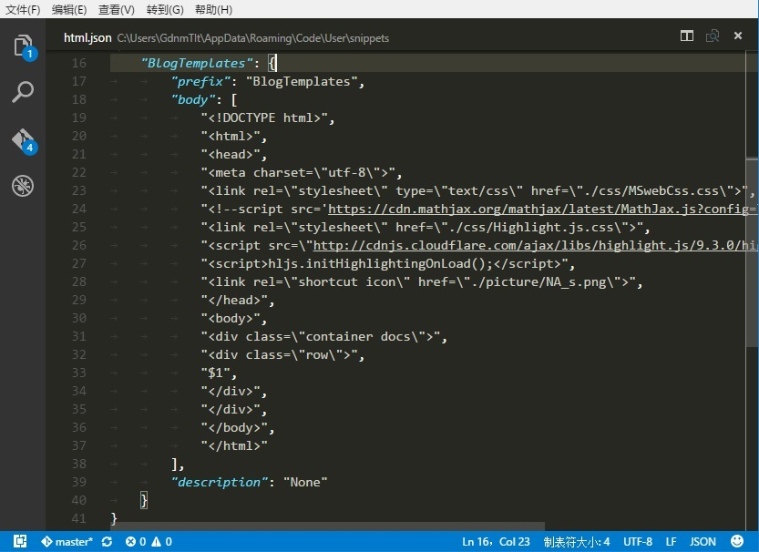

在之前的Blog中已经提到了Markdown，一种轻型的文本标记语言。说他轻是因为它的语法格式很少，对自定义的支持就更少了。比如不能限定图片大小、不能定义页面内链接等。我想要用Markdown写一篇文章然后翻译成.html文档，在写作过程中会发现不得不加入越来越多的Html语言。其实，越是想要摆脱文档格式，他的应用范围也越小，作为一种标准化的文档格式进行文档发布尚且可以，但是想要自定义的话Markdown就显得捉襟见肘了，最后你会发现，文档内臃肿地充斥着大量的Html语言，一点也谈不上优雅美观。
其实，世界上已经有很多优秀的排版工具和排版语言了。比如TeX排版系统，比如Microsoft Word，但是他们都算不上“轻量级”，尤其是TeX系统，我想用过TeX的同学应该都有这样的体会，更别提那种奇怪的语法和让人崩溃的排版速度了。Html语言的出现是一个希望，但是在文档排版方面Html还是入门级水平。我想是不是可以在.html文档中引入TeX排版系统，这样的话可以设计出非常棒的页面。
TeX的好处就在于它真正地去设计了每一种字体，真正地去调整了字和字的间距，整篇文档看起来非常赏心悦目。TeX不仅仅是这样，他支持复杂的数学公式的输入，支持文档的索引，支持各种已经预制的不同的文档格式的生成和切换。TeX在商业排版上的应用是Html望尘莫及的，不计其数的出版发行物都有自己设计的TeX模板——Html也有，不过那些并不是文档排版类型的：大多数的css样式表都是关于网站设计的。
我想我可以建立一个比Markdown更加优秀的，有强大的可扩展性的文本标记语言，他会以TeX的排版格式作为基础，同时也有Html文档的灵活性和易于传输的特性。在css不能胜任的情况下，他可以通过.js脚本完成任务。这需要我学习Javascript和深入学习Html和Css样式表。我应当首先得出一个具体的模板，然后再考虑简化成类似于Markdown的标记语言。
这是一个浩大的工程，并且它的实用性也受到质疑。如果这种东西只适合于我个人部署使用，那也并没有存在的必要。那么问题就来了，是不是网络博客也应当规范化？我的答案是不，但是博客形式最后会统一——大家都喜欢优雅美丽的东西。我想将TeX与Html对接会是一个相当不错的主意：可以设计成一个TeX宏包，也可以单独调用使用TeX系统生成的JS脚本。我知道已经有人开始在做这个事情了，不过我想通过自己的努力做成这件事，核心技术是下载不来的——我需要深入理解TeX，深入理解JS，深入理解Html和Css。千里之行始于足下，在接下来的时间里我会重点学习Javascript，然后学习TeX系统，最后再考虑移动版的TeX实现。
这篇文章是用Html写的，并没有用Markdown。文章的内容比形式更重要——从今以后我不会再使用Markdown或者考虑改进Markdown了，那除了增加文章发布流程以外没有任何意义。有这样的功夫我还不如去设置几个Html语法快捷键呢。
顺便发布一个Blog模板和相应的css：MSwebCss.css，Highlight.js.css。如果使用VSCode编辑Html文档的话可以下载扩展：HTML Snippets，并把你的Blog模板添加到VSCode的HTMLSnippet：
文件 > 首选项 > 用户代码片段 > HTML > html.json
。VSCode官方文档有相关介绍。
